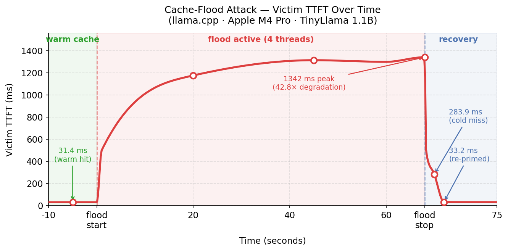
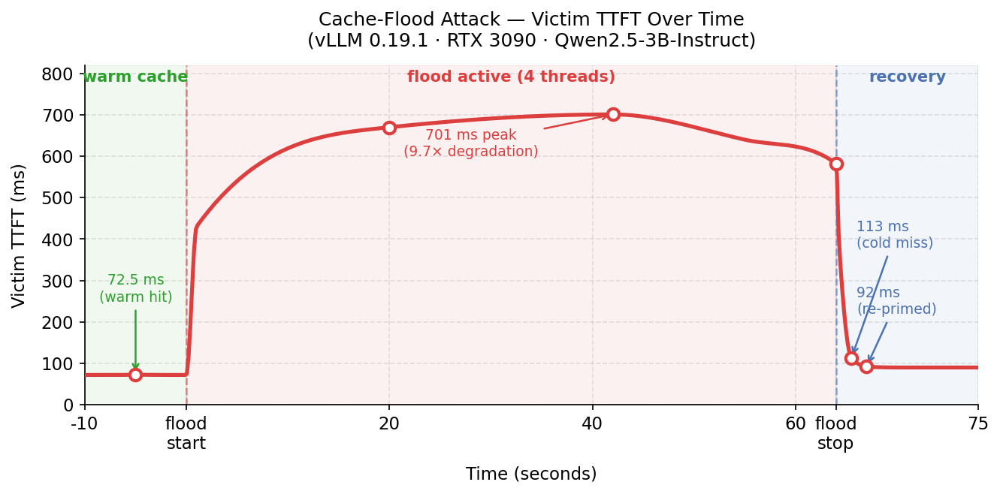

KV Cache Flood: DoS Against Multi-Tenant LLMs
My previous post covered the KV cache timing side-channel — a known attack class, for which I built a PoC and DIY test tooling. This post covers a different application of the same shared-cache vulnerability: using cache eviction as a DoS attack against co-tenants, with cost structure which may be asymmetric in the attacker’s favor.
TL;DR
Every token prefilled by an LLM inference server can be cached. If you evict another tenant’s cached prefix, every one of their subsequent requests pays full cold-prefill cost until they re-warm it — at which point you evict it again. The attacker sends requests that generate only a single output token (near-zero compute cost) but carry long prompts that fill cache blocks. The victim pays for repeated full re-prefill at scale. On a shared RTX 3090 running vLLM, 4 flood threads caused significant TTFT degradation peaking at 9.7× within the first minute.
Weaponized cache eviction is a well-known attack class: Prime+Probe fills CPU cache sets with attacker data to evict a victim’s lines; CDN cache-busting floods origin servers by bypassing edge caches with unique URLs. I haven’t seen it applied to LLM KV caches, which is what I describe here.
⚠️ DISCLAIMER: Research purposes only. Run
flooder.pyonly against infrastructure you own or have explicit written permission to test. Pointing it at a shared provider is a DoS attack, whether or not their cache is isolated.
1. The shared-cache surface
The foundation is covered in my earlier post, but here is a quick recap: production LLM inference servers (vLLM, SGLang, llama.cpp, TensorRT-LLM) cache the KV tensors produced during prefill and reuse them when a later request shares a prefix. In their default configurations, these caches are keyed only by the token sequence — not by tenant identity. When the same cache serves multiple tenants, two tenants with identical prompt prefixes hit the same cache entry, and two tenants with different prompt prefixes compete for the same LRU eviction pool.
flowchart LR
subgraph Tenants["Tenants (isolated)"]
direction TB
V["Victim Pod"]
A["Attacker Pod"]
V ~~~ A
end
subgraph Cluster["Shared Inference Cluster"]
direction TB
S["Inference Server"]
K[("Shared KV Cache")]
S <--> K
end
V <--> S
A <--> S
That last point is this post. The timing side-channel I described earlier is a read on the shared cache. This attack is a write — deliberately filling the shared pool to evict a target tenant’s entries.
2. The attack, mechanically
The mechanism is LRU eviction pressure. vLLM (and most other servers) use an LRU policy over a fixed KV cache pool. When the pool is full, the least recently used blocks are evicted. The attacker submits a sustained stream of requests with unique long prefixes, each filling cache blocks with attacker-owned entries. Under sustained pressure, the victim’s hot prefix blocks are displaced. The victim re-prefills from cold on their next request — potentially thousands of tokens — then re-warms, at which point the flood displaces them again.
flowchart LR
subgraph S1["1. Warm cache"]
direction TB
a_top["[ MRU ]"]:::label
a1["Victim prefix block"]:::victim
a2["Victim prefix block"]:::victim
a3["Victim prefix block"]:::victim
a_bot["[ LRU ]"]:::label
a_top --- a1
a1 --- a2
a2 --- a3
a3 --- a_bot
end
subgraph S2["2. Flood writes garbage"]
direction TB
b_top["[ MRU ]"]:::label
b1["Attacker garbage"]:::attacker
b2["Attacker garbage"]:::attacker
b3["Victim prefix block"]:::victim
b_bot["[ LRU - evict next ]"]:::label
b_top --- b1
b1 --- b2
b2 --- b3
b3 --- b_bot
end
subgraph S3["3. Victim evicted"]
direction TB
c_top["[ MRU ]"]:::label
c1["Attacker garbage"]:::attacker
c2["Attacker garbage"]:::attacker
c3["Attacker garbage"]:::attacker
c_bot["[ LRU ]"]:::label
c_top --- c1
c1 --- c2
c2 --- c3
c3 --- c_bot
end
S1 ==>|"flood begins"| S2
S2 ==>|"flood continues,
victim ages out"| S3
classDef victim fill:#cfe8ff,stroke:#3b82f6,color:#1e40af
classDef attacker fill:#ffe4cc,stroke:#ea580c,color:#9a3412
The attacker’s requests use max_tokens=1 asking the model to stop after generating a single output token. Output generation is where most GPU compute goes; by minimizing output, the attacker lowers their own cost while maximizing cache pressure.
flooder.py implements the core flood loop in a few lines:
def flood_worker(stop_event, counter):
while not stop_event.is_set():
prompt = unique_garbage_prompt() # long unique prefix — fills cache blocks, never matches victim
send_request(prompt, max_tokens=1) # fire and forget; 1 output token = minimal compute cost
counter[0] += 1
in 4 concurrent looping threads. The script measures TTFT before the flood, during, and after — as a stand-in for what a real victim tenant would observe. In a real multi-tenant deployment, the victim is a co-tenant sending their own requests: their TTFT is fast when their prefix is in cache, and spikes when the attacker’s flood displaces those blocks — with no visibility into why. That is the impact the measurements below represent.
3. Attack economics
The core impact is TTFT degradation and throughput loss. Like any DoS attack, the attacker must sustain the pressure — once the flood stops, the victim re-warms on their next request and recovers immediately. The cost angle is worth noting but depends heavily on the provider’s pricing structure: providers that discount cached input tokens make cache misses expensive for the victim; providers that charge a premium for cache writes make flooding expensive for the attacker; pay-per-hour GPU deployments see the impact as throughput loss rather than a direct billing difference. The primary harm is latency degradation regardless of billing model.
Model size amplifies the attack surface. KV cache memory scales linearly with sequence length — each additional token adds a fixed amount of VRAM. What changes with model size is how much VRAM is left over for the cache after model weights are loaded. Larger models leave less headroom, and the attacker’s flood only needs to fill that available space to trigger eviction. Operators running large models on minimum-viable hardware are the most exposed.
4. Test results
I ran the flood PoC in two environments: a local llama.cpp setup on my Apple M4 Pro laptop, and a GPU pod running vLLM on an RTX 3090. Both confirmed the attack. The local result is stronger in relative terms because llama.cpp is single-threaded, so flood threads add queuing contention on top of the cache eviction effect.
4.1 llama.cpp · Apple M4 Pro · TinyLlama 1.1B
4 flood threads, 60-second flood window, ~400-token garbage prompts. The victim’s SECRET_PREFIX is ~619 tokens.

| Phase | Victim TTFT |
|---|---|
| Before flood (cache warm) | 31 ms |
| During flood — t=20s | 1178 ms |
| During flood — t=45s | 1315 ms |
| During flood — t=68s | 1342 ms |
| After flood — first probe | 284 ms |
| After re-prime (recovered) | 33 ms |
| Sustained degradation factor | 42.8× |
The flood sent 110 requests in 60 seconds. The extreme degradation factor reflects both eviction and contention: llama.cpp processes requests sequentially, so 4 concurrent flood threads also act as a request queue, stacking latency on the victim’s probes during the flood window.
4.2 vLLM 0.19.1 · RTX 3090 · Qwen2.5-3B-Instruct
Same parameters. vLLM batches requests, so flood threads contribute less queuing contention — the degradation reflects mostly cache eviction.

| Phase | Victim TTFT |
|---|---|
| Before flood (cache warm) | 73 ms |
| During flood — t=20s | 670 ms |
| During flood — t=42s | 701 ms |
| During flood — t=64s | 582 ms |
| After flood — first probe | 113 ms |
| After re-prime (recovered) | 93 ms |
| Sustained degradation factor | 9.7× |
The flood sent 423 requests in 60 seconds.
Two effects compound during the flood. The primary effect is cache eviction: the victim’s cached prefix blocks are displaced, forcing full cold prefill. The secondary effect is request queuing contention: flood threads compete for GPU compute. Both effects are visible in the peak reading of 701 ms — well above the 113 ms cold-miss latency measured immediately after the flood stopped. An attacker with more threads or a higher request rate would see higher contention and correspondingly higher victim TTFT.
The first post-flood probe confirms eviction (cold miss in both environments). Recovery takes exactly one request. This means the attacker must sustain the flood continuously to maintain the degradation — but nothing about the attack requires it to be a one-shot event.
5. Why detection is hard
From the provider’s side, the flooder looks like a high-volume legitimate customer: diverse prompts, many requests, short outputs — indistinguishable from a batch inference workload without per-tenant cache-hit-rate monitoring. Standard rate limiting misses it if the attacker stays within their tier. The victim sees elevated TTFT and higher-than-expected input token costs but has no direct visibility into what caused the eviction.
The distinguishing signals that could catch it:
- Per-tenant cache write rate (bytes/sec and blocks/sec) anomalously high from one API key
- Per-tenant cache hit rate for the victim anomalously low relative to their historical baseline
- Correlation between victim hit-rate drops and attacker write-rate spikes
None of these are surfaced by default in vLLM’s metrics.
6. Defenses
If you’re building a multi-tenant product on top of a self-hosted inference server — an API wrapper, an agent platform, a SaaS product where multiple customers share a vLLM or SGLang backend — this attack applies to you directly. The server doesn’t know your tenants exist; it sees one request queue and one cache pool. A single misbehaving or malicious customer can degrade service for everyone else, and nothing in the default configuration stops them. The mitigations below are things you need to add.
Per-tenant cache footprint quotas directly address the flood. Each tenant gets a quota of cache blocks; eviction targets are chosen proportionally within the offending tenant’s allocation rather than globally. A tenant filling the pool with garbage only displaces their own entries, not other tenants’. Rate-limiting cache writes per tenant (blocks/sec) is the enforcement mechanism.
Tenant-scoped cache keys (the fix described in the companion post) also eliminate the flood attack entirely as a side effect. If each tenant’s entries are keyed with their identity, there is no shared pool to flood — a garbage entry from attacker key A can never displace a legitimate entry from victim key B, because they exist in logically separate namespaces. This is the cleaner fix, but it requires changes to the cache key derivation that per-tenant quotas do not.
Defenses observed in practice. Anthropic’s prompt caching largely neutralizes any economic asymmetry in the flood attack. Cache writes are billed at a premium (1.25× base input rate for 5-minute TTL, 2× for 1-hour), so the attacker pays more per token than a normal request. There is a minimum cacheable prompt size (1024–4096 tokens depending on model), so each flood request must be substantial to even register a cache write. The net economics: the attacker pays 1.25× base input rate per flood request; each flooded victim request that misses cache pays 1.0× instead of the usual 0.1× — a 10× cost increase for the victim. The attacker’s per-token cost is only marginally higher than the per-victim damage they cause, though the aggregate victim impact grows with victim count. In practice, sustaining enough flood volume on a managed API to matter would likely trip rate limits before the economics become interesting.
7. Conclusion
The shared KV cache is not just an information channel — it is also a resource that can be weaponized against co-tenants. The attack requires one API key and a loop. The attacker minimizes output tokens; the victim pays for repeated full re-prefill. Whether that translates into a cost advantage for the attacker depends on the deployment’s pricing structure, but the latency degradation is real regardless.
The root cause is the same as for the timing side-channel: cache entries are keyed by token sequence without tenant identity. The mitigations are tenant-scoped cache keys, per-tenant cache quotas, and rate limits — or economic leverage that raises the attacker’s cost: write premiums and minimum cacheable prompt sizes.